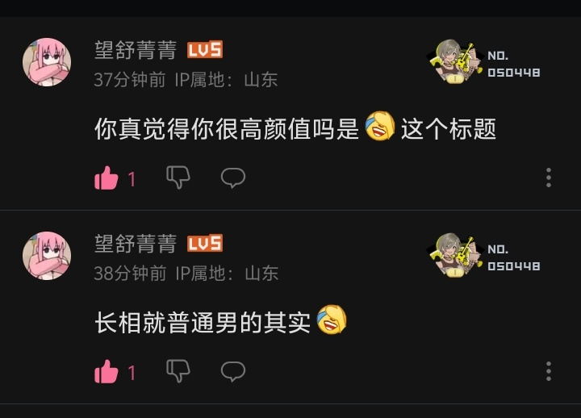
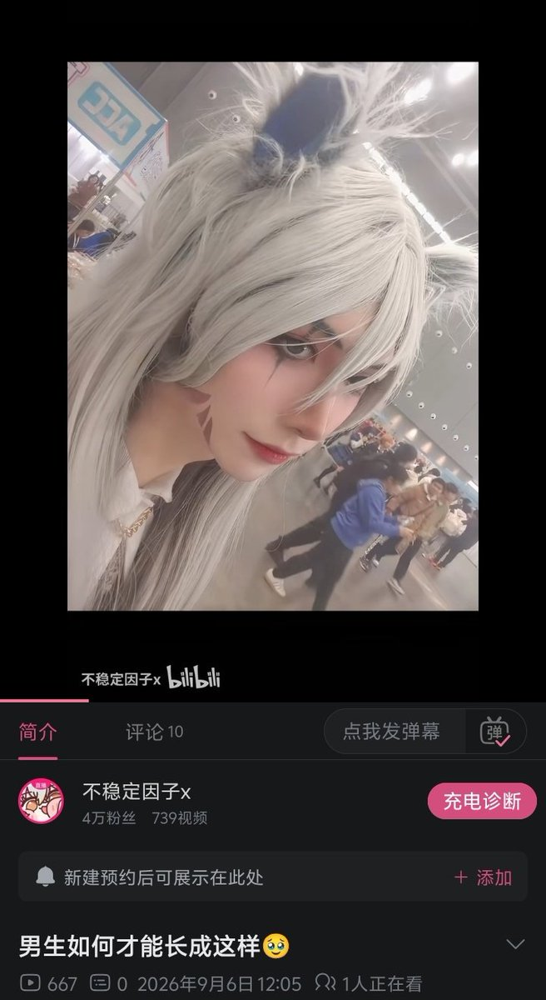

amber 水母🏳️⚧️
@amber_medusozoa
@buwendingyinzi 一眼猜出来这种人长啥样


不稳定因子x
@buwendingyinzi
哎我真服了我的语言表达水平
给人引起误会了
这个我的意思就是我长得肯定不是这样，但是我想整成这个样子 但是我肯定不敢直接写如何整容成这样
因为我在小红书那边发了这个整字有关的标题，然后被判定为医美推广，然后直接被锁了
我之前就一直觉得我这个语文还要再好好学一下 看来后面真的去学学了 https://t.co/dxGSbH0VRb